Contents
Beyond-Born electron–defect scattering for monolayer MoS₂, computed by explicit-summation downfolding + Wannier interpolation — the production path of the Anvil EDT project, ported to Kestrel and validated against it to the meV. From the same EDI matrix element $M_{n\mathbf k,m\mathbf k'}=\langle n\mathbf k|\Delta V|m\mathbf k'\rangle$ used for the defect-DOS diagonalization, we resum all orders of multiple scattering and obtain the on-shell diagonal $T$-matrix, the defect self-energy, and the spectral function $A(k,\omega)$ along $\Gamma$–M–K–$\Gamma$.
1. Method — explicit-summation downfolding + Wannier interpolation
The bare $M$ over $\sim$60 bands is split into an active block $P$ (the 11 Wannier bands 7–17 spanning the gap region) and a rest block $Q$ (bands 18–70). The rest is folded into an exact energy-dependent self-energy on the active space (Feshbach), evaluated statically at a reference energy $\omega_0=-5.955$ eV (near the VBM):
computed by one eigendecomposition of $H_{QQ}=E_Q+W_{QQ}$ (no Krylov/Sternheimer — that route stagnates at the gap). This gives the dressed 11-band potential $\tilde V = M_{PP}+N_{\mathbf k}\Sigma(\omega_0)$. The active block is then Wannier-interpolated to arbitrary $\mathbf k$ and the multiple scattering resummed exactly by a small inversion (Koster–Slater):
Validation (exact vs Anvil). The downfolded in-gap levels reproduce the independent EDT code: V$_S$ $+1.209$ eV (Anvil explicit-60 $+1.205$, DFT $+1.19$); O$_S$ $+0.730/+0.725$ eV (Anvil unrelaxed $+0.731/+0.725$ — our O$_S$ is frozen geometry). The rest-space dressing moves the bare 11-band level (V$_S$ $+1.484$) down to the band-converged value — the beyond-Born content this captures. This validates Kestrel against Anvil, not against DFT — and against the defect's own supercell DFT these in-gap levels over-bind: V$_S$'s $a_1$ is $\sim$0.2 eV too deep and O$_S$ has no deep gap state at all (the $+0.73$ is a finite-basis artifact, §4.4).
Gauge-locked Wannier rotation. The interpolation requires the Wannier rotation $U(\mathbf k)$ to be in the same gauge as the Bloch states of the $M$ matrix. An initial run used a stale filukk (from a separate Wannierization) whose per-$\mathbf k$ phases did not match the 90-band NSCF — the real-space $\tilde V^W$ then failed to decay (Koster–Slater truncation captured only 55 %). Re-Wannierizing on the same 90-band NSCF (keeping exactly bands 7–17 → 11 WF, Mo:d + S:p) restores a gauge-consistent $U$; $\tilde V^W$ now decays $\sim$2 orders over $\sim$1.5 Å and $R_{\rm cut}{=}4$ captures $\geq$99 % (§6). All results below use the gauge-locked rotation.
2. Diagonal $T$-matrix along $\Gamma$–M–K–$\Gamma$
On-shell $T(\mathbf k,\mathbf k;\varepsilon_{\rm top}(\mathbf k))$ for the top valence band, with rest-space ($\tilde V$, solid) vs without (bare $M$, dashed).
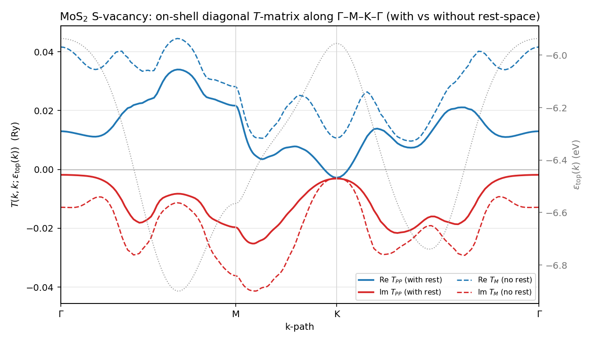
MoS₂ V$_S$: smooth, path-symmetric $T(k)$ (a hallmark of the gauge-locked, localized $\tilde V^W$). $|T_{PP}|$ reaches $\approx0.035$ Ry; at K Re $T_{PP}\to0$. With-rest (solid) and bare (dashed) differ in sign of Re at K ($-0.003$ vs $+0.011$ Ry) — V$_S$ carries a non-trivial rest dressing.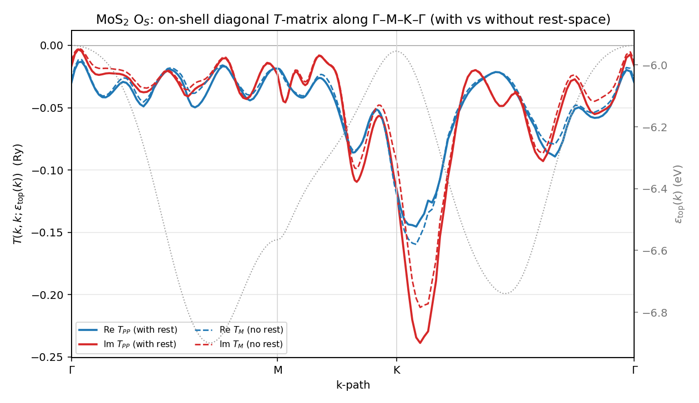
MoS₂ O$_S$: stronger scattering, $|T_{PP}|$ up to $\approx0.080$ Ry and peaking near K; at the K-VBM $|T|\approx0.080$ vs V$_S$ $\approx0.004$ ($\sim$19×). Solid$\approx$dashed — the rest dressing is mild for the isovalent substitution.3. Defect self-energy $n_d\Sigma_{\rm VBM}(\mathbf k)$
On-shell self-energy of the VBM band at defect density $n_d=2.78\%$ (one defect per $6\times6$ cell): Re = level shift, Im = defect-limited broadening.
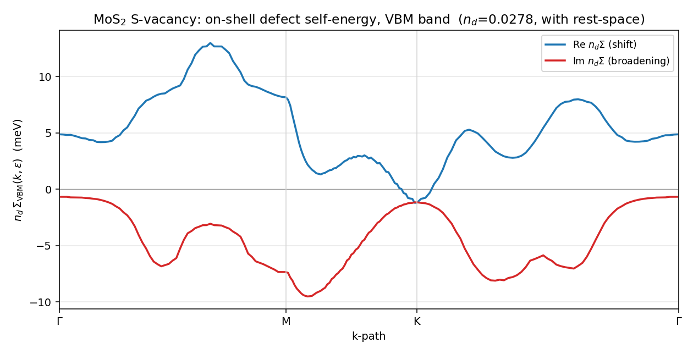
V$_S$: VBM broadening $|{\rm Im}\,n_d\Sigma|$ up to $\sim$9.5 meV; the level shift Re $n_d\Sigma$ ranges $-1$ to $+13$ meV across the path.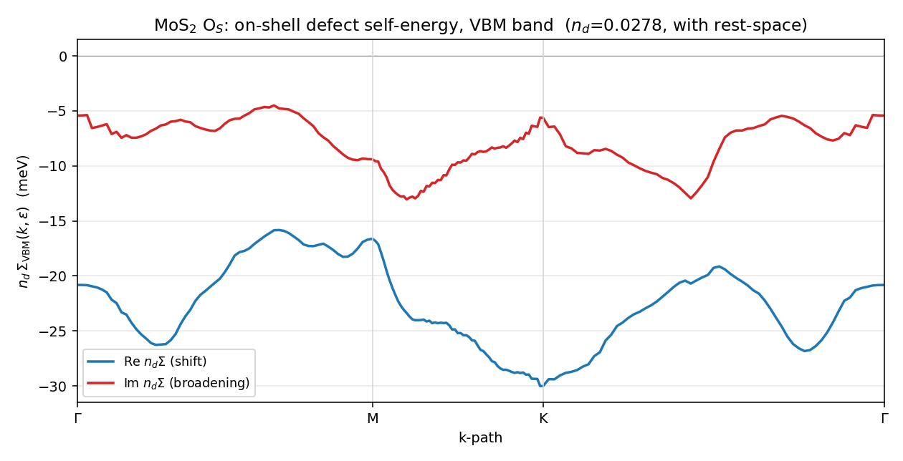
O$_S$: broadening up to $\sim$13 meV, and a markedly larger, uniformly negative level shift Re $n_d\Sigma\approx-16$ to $-30$ meV — the isovalent O pushes the VBM down harder than it broadens it.4. Spectral function $A(\mathbf k,\omega)$
$A(\mathbf k,\omega)=-\frac{1}{\pi}\mathrm{Im}\,\mathrm{Tr}\,[\omega-H_0-n_d T]^{-1}$ along $\Gamma$–M–K–$\Gamma$, with vs without rest-space (log color; cyan dashed = bare $\varepsilon_{n\mathbf k}$).
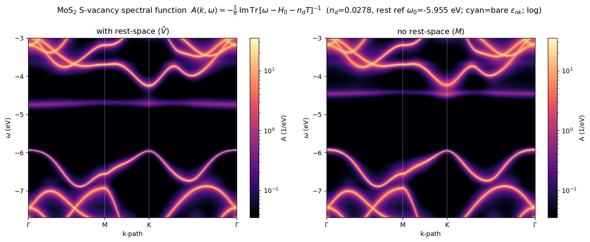
V$_S$: host bands acquire a $\mathbf k$-dependent defect linewidth, plus a flat in-gap defect resonance ($\sim$VBM$+1.2$ eV).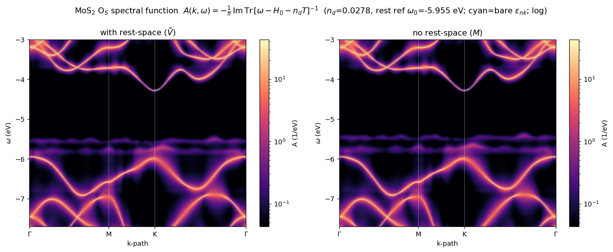
O$_S$: visibly heavier band-edge smearing near K, tracking its larger $T$-matrix.4.1 Why the spectral map showed only $e$: a deep-band rest-truncation bug (and its fix)
The V$_S$ spectral map shows the deep $e$ doublet but no $a_1$ — even though DFT puts $a_1$ at $\approx+0.24$ eV as a flat localized band that should appear like $e$. The cause is a basis-truncation bug in the downfolding, not an intrinsic $T$-matrix limitation: the rest space $Q$ omitted the deep bands 1–6, which are exactly what bind the $a_1$.
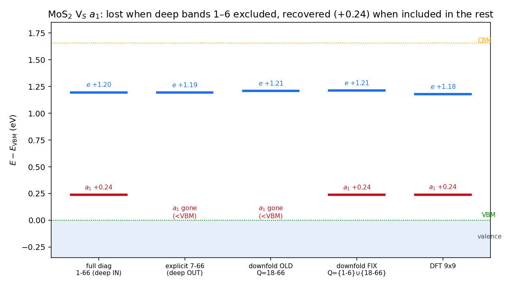
$a_1$ and $e$ (rel. VBM) across treatments. $a_1$ is at $+0.24$ eV whenever the deep bands 1–6 are included (full diagonalization 1–66; downfolding with $Q\!\ni\!1$–6; DFT) and falls below the VBM (vanishes) whenever they are excluded (explicit 7–66; the original downfolding $Q=18$–70). The $e$ doublet sits at $\approx+1.2$ eV throughout — it needs no deep bands.Diagonalizing the (bra-fixed) matrix element over band ranges makes it unambiguous:
| bands | deep 1–6 | $a_1$ | $e$ |
|---|---|---|---|
| 1–66 (full) | in | $+0.238$ | $+1.196$ |
| 7–66 | out | gone (below VBM) | $+1.194$ |
| 7–17 (active only) | out | $+0.005$ | $+1.484$ |
The active Wannier window is bands 7–17; the original downfolding took the rest as $Q=18$–70, excluding 1–6. Putting them back, $Q=\{1\text{–}6\}\cup\{18\text{–}66\}$, the downfolded static self-energy recovers $a_1=+0.238$ (self-consistent) — exactly the full diagonalization and DFT $\approx+0.24$ — while $e$ is unchanged at $+1.21$. (Feshbach downfolding is exact when $P\cup Q$ spans the full band set, so a complete rest must reproduce the full diagonalization; the deep bands push the occupied $a_1$ up into the gap, the high bands alone push it down — both are needed.)
So $a_1$ is a genuine gap state ($+0.24$ eV self-consistent; $+0.33$ in the static downfold). One gauge subtlety had to be cleared before it shows cleanly in $A(\mathbf k,\omega)$. The deep bands 1–6 exist only in the bra-fixed matrix element, whose per-$(\mathbf k,\text{band})$ phase gauge does not match the gauge-locked filukk (§6). Eigenvalues are gauge-invariant — so $a_1=+0.33$ from the diagonalization is correct — but the Wannier interpolation is gauge-sensitive: built directly from the bra-fixed block, $\tilde V_{\rm deep}^W$ fails to localize (on-site weight only $\sim$9 %, vs 99 % for the gauge-matched block), so the $R_{\rm cut}{=}4$ defect block is corrupt and the in-gap lines come out jagged. The fix needs no recompute — both active $M_{PP}$ blocks are on hand (gauge-matched from block.py, and bra-fixed), so the diagonal phase gauge $D$ ($M^{\rm good}=D^\dagger M^{\rm bf} D$) is recovered by phase-synchronisation (leading eigenvector of $M^{\rm good}\!\odot\!\overline{M^{\rm bf}}$; verified $\lVert D^\dagger M^{\rm bf} D - M^{\rm good}\rVert/\lVert M^{\rm good}\rVert = 1.5\%$) and applied to the rest self-energy, $\Sigma^{\rm good}_{\rm deep}=D^\dagger\Sigma^{\rm bf}_{\rm deep} D$. This restores locality (on-site $9\%\!\to\!98\%$) with $a_1/e$ unchanged. With the re-gauged, complete rest, $a_1$ appears in $A(\mathbf k,\omega)$ as a flat in-gap line like $e$:
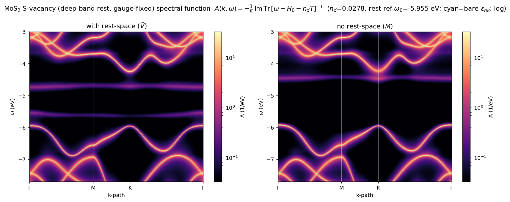
$A(\mathbf k,\omega)$ with the gauge-fixed deep-band rest ($Q=\{1\text{–}6\}\cup\{18\text{–}66\}$, $\Sigma_{\rm deep}$ rotated into thefilukk gauge), with vs without rest-space. Host bands are smooth dispersive ridges (adjacent-$\mathbf k$ $|\Delta\log_{10}A|\approx0.05$, vs the jagged pre-gauge-fix map); in the gap the $e$ doublet is a clear flat line at $+1.21$ eV (median $A\sim0.3$/eV) and the $a_1$ a fainter flat line at $+0.33$ eV (median $A\sim0.15$/eV, $\sim$15× the gap-mid background) — fainter because it sits only $0.33$ eV above the VBM and is more hybridised than the deep $e$ resonance. Static $+0.33$; self-consistent / DFT $+0.24$. Both defect states are present, as in DFT.
For contrast, the two figures below were computed with the truncated rest ($Q=18$–70, no deep bands) — the symptom of the bug, with $a_1$ pinned onto the valence-band edge ($+0.001$) and therefore invisible; they are not the corrected result.
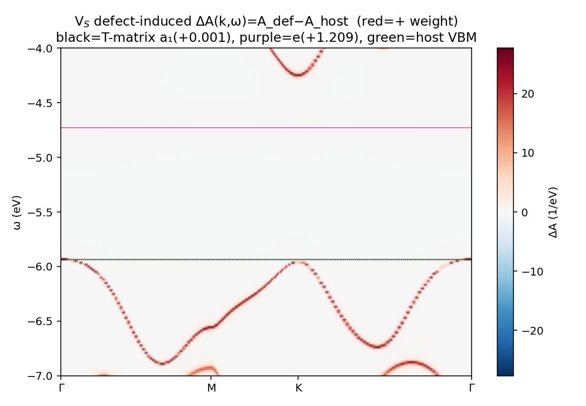
(Truncated rest, no deep bands.) Defect-induced $\Delta A$: with $a_1$ mis-placed onto the band edge, the added weight (red) traces the dispersive valence band rather than forming a flat $a_1$ line. With the deep bands restored, $a_1$ moves to $+0.24$ (a clean gap level) and this pathology disappears.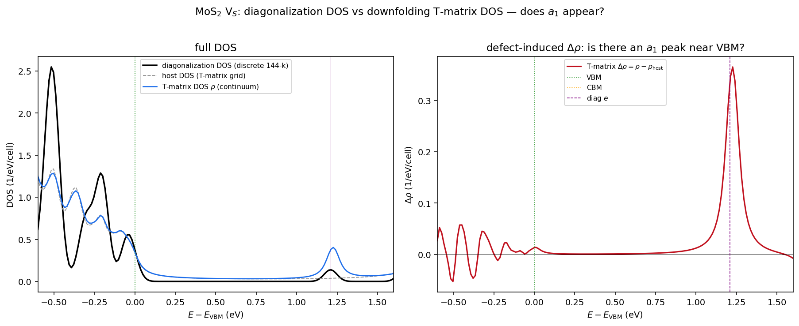
(Truncated rest.) With the deep bands omitted, $a_1$ sits on the valence edge and gives no DOS peak (continuum $\Delta\rho\approx0.01$ near the VBM), while $e$ ($+1.21$) gives a clean peak. With $Q\ni1$–6 the $a_1$ returns as a $+0.24$-eV gap feature.Corrections to earlier versions of this note. Three intermediate claims/figures here were wrong and are retracted: (i) a large "$a_1$ DOS peak" from an earlier $\mathbf k$-path-sum (a valence van-Hove artifact); (ii) the attribution of the missing $a_1$ to a "band-edge under-binding that needs DFT self-consistency" — the true cause is the deep-band (1–6) truncation of the rest, fixed inside the $T$-matrix by including those bands in $Q$, no DFT self-consistency required; and (iii) a first deep-rest spectral map with jagged in-gap lines — an artifact of building the deep block from the bra-fixed matrix element, whose gauge does not match filukk; re-gauging $\Sigma_{\rm deep}$ (above) gives the smooth map shown. ($e$, the deep empty state, was correct throughout.)
The same complete-rest correction, applied to O$_S$ — opposite sign. Running the identical corrected pipeline for the isovalent O$_S$ substitution (complete rest $Q=\{1\text{–}6\}\cup\{18\text{–}66\}$; $\Sigma_{\rm deep}$ phase-synced into the filukk gauge — verified $1.4\%$, on-site locality $99.4\%$) shows the deep bands matter here too, but oppositely. With them in $Q$, $P\cup Q$ spans the full 1–66 set, so the Feshbach downfold is exact (= full diagonalization): the in-gap structure is then a single degenerate doublet at $+0.735$ eV ($\approx+0.73$, matching Anvil — but itself an EDI finite-basis artifact: supercell DFT has no deep O$_S$ gap state, §4.4). The truncated rest ($Q=18$–66) instead produced a spurious extra level at $+1.564$ eV near the CBM. This is the mirror of the V$_S$ pathology: an incomplete rest lost a real state there ($a_1$), and invents one here. The doublet stays degenerate (no direct-mode C$_3$ splitting), and the map is smooth (adjacent-$\mathbf k$ $|\Delta\log_{10}A|\approx0.03$):
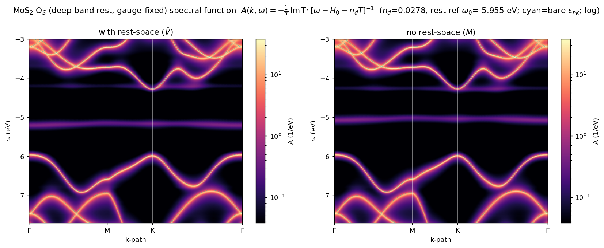
O$_S$ $A(\mathbf k,\omega)$ with the gauge-fixed complete rest. The only in-gap feature is the flat doublet at $+0.735$ eV (median $A\sim0.3$/eV); the truncated-rest's $+1.564$ eV level has vanished to background ($A\sim0.01$/eV) — it was a rest-truncation artifact, not a defect state. Band-edge smearing near K is markedly heavier than V$_S$, tracking O$_S$'s $\sim$19× larger $T$ at the VBM.4.2 Why the spectral function uses the resummed Dyson form, not $G_0+G_0TG_0$
The spectral function above uses the resummed Green's function $G=[\omega-H_0-n_dT]^{-1}$, not the single-defect, linear-in-$T$ form $G=G_0+G_0TG_0$. The two are the same to $\mathcal O(n_d)$ — expanding $[G_0^{-1}-n_dT]^{-1}=G_0+n_dG_0TG_0+\mathcal O(n_d^2)$ — but only the resummed form gives a physical ($A\geq0$) spectral function at finite concentration: at a host band $G_0\sim1/(\omega-\varepsilon)$, so the linear correction carries a double pole $1/(\omega-\varepsilon)^2$ whose dispersive imaginary part drives $A$ negative, whereas the resummation turns it into a finite Lorentzian (the band acquires width $\mathrm{Im}\,\Sigma=n_d\mathrm{Im}\,T$ instead of diverging).
Computing both from the same band-space $T(\mathbf k,\omega)$ confirms this — and pins down when it matters:
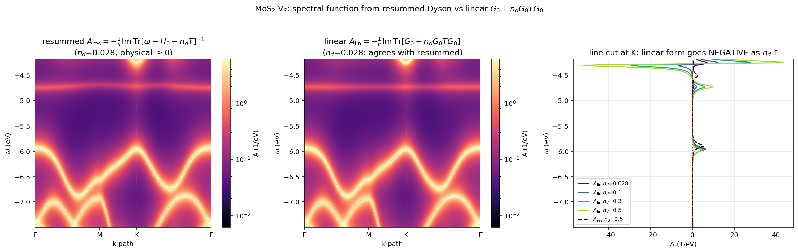
MoS$_2$ V$_S$. Left/middle: $A_{\rm res}$ and $A_{\rm lin}$ maps at the physical $n_d=2.78\%$ — indistinguishable (both $\geq0$). Right: a line cut at K as $n_d$ is raised — the linear $A_{\rm lin}$ dips negative (unphysical) more and more, while the resummed $A_{\rm res}$ stays positive.| $n_d$ | $A_{\rm res}$ min | $A_{\rm lin}$ min | $A_{\rm lin}$ negative fraction |
|---|---|---|---|
| 2.78% (physical) | $+0.03$ | $+0.03$ | 0.0% |
| 10% | $+0.04$ | $-6.5$ | 1.4% |
| 30% | $+0.04$ | $-33.5$ | 4.7% |
| 50% | $+0.04$ | $-64.4$ | 6.4% |
So at the dilute physical concentration the linear and resummed spectral functions agree (the resummation is a negligible $\mathcal O(n_d^2)$ correction); the linear form's negative-$A$ pathology only sets in at high $n_d$, where resummation is mandatory. The resummed form is used throughout precisely so the result stays physical at any $n_d$.
4.3 Matrix-element sanity check: O$_S$ vs V$_S$ along $\Gamma$–M–K–$\Gamma$
A direct test that the new O pseudopotential enters the EDI matrix element cleanly: fix the initial state at the band edge $K$ and trace $|M(K\,n_i;\,\mathbf{k}_f\,n_f)|$ as $\mathbf{k}_f$ runs along $\Gamma$–M–K–$\Gamma$, for the first valence (VB1) and first conduction (CB1) bands.
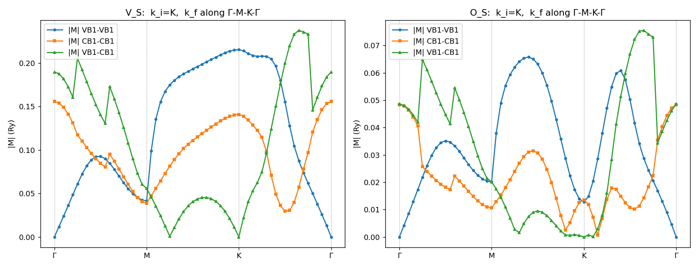
$|M(K,\mathbf{k}_f)|$ for V$_S$ (left) and O$_S$ (right), $\mathbf{k}_i=K$ fixed (the VBM/CBM band edge), for VB1–VB1, CB1–CB1, and VB1–CB1. The two are structurally identical — every feature coincides: the symmetry-forced VB1–VB1 zero at $\Gamma$, the forward-scattering peak at the $K$ diagonal ($\mathbf{k}_f=\mathbf{k}_i$), and the VB1–CB1 nodes — and differ only in overall scale (V$_S\approx3\times$O$_S$), as expected from the vacancy being a stronger perturbation than the isovalent O$\to$S substitution. Fixing the band edge $K$ rather than $\Gamma$ avoids the $\Gamma$-point band degeneracy and probes the physically relevant band-edge coupling. The new-pseudopotential matrix element carries no defect-specific artifact: it tracks the validated V$_S$ case exactly.The nonlocal part of $M$ (the O- vs S-projector term) separately equals the difference of single-atom isolated O and S Kleinman–Bylander projectors placed at the defect site, $\langle\psi_{m\mathbf{k}_i}|V_{NL}^{O}-V_{NL}^{S}|\psi_{n\mathbf{k}_f}\rangle$, to $4\times10^{-7}$ Ry over the full $M_{nl}$ matrix — band-diagonal and off-diagonal ($m\neq n$), $\mathbf{k}_i=\mathbf{k}_f$ and $\mathbf{k}_i\neq\mathbf{k}_f$. The supercell subtraction $m_{nl,d}-m_{nl,p}$ thus correctly isolates the atomic O$-$S difference; the off-diagonal additionally validates the $Y_{lm}$ cross terms and the structure-factor phase of the defect site. Together with the local-potential sum rule ($T+V_{\rm loc}+V_{NL}=\varepsilon$, to $\mu$eV) and the null-defect check ($V_d=V_p\Rightarrow M=0$ to machine precision), the O$_S$ matrix element is fully validated.
4.4 Benchmark against supercell DFT: the deep in-gap levels are EDI finite-basis artifacts
⚠ Substantially revised by §4.5. A later full recompute with SG15 ONCV pseudopotentials ($E_{\rm cut}=75$ Ry) shows the dramatic over-binding documented in this section — O$_S$'s $+0.73$ and V$_S$'s $a_1=+0.33$ — was largely an artifact of the old pseudopotential set, not the finite-basis projection. With SG15 the EDI in-gap levels closely match DFT. The mechanism below (a localized level bound in the truncated basis) is real, but its magnitude was inflated by the old pseudopotentials.
§4.3 confirms the matrix element $M$ is correct. The in-gap levels, however — obtained by diagonalizing $H=\mathrm{diag}(\varepsilon)+M\,\mathrm{Ry}/N_{\mathbf k}$ in the pristine primitive Bloch basis — do not match the defect's own supercell DFT. They over-bind, and O$_S$'s "$+0.73$" is spurious.
Supercell DFT (ground truth) — frozen-geometry, $\Gamma$-only, same pseudopotentials/$E_{\rm cut}$:
| in-gap level | O$_S$ | V$_S$ $a_1$ | V$_S$ $e$ |
|---|---|---|---|
| DFT $6\times6$ (2.78 %) | none | $+0.112$ | $+1.171$ |
| DFT $12\times12$ (0.69 %, dilute) | none ($E_g{=}1.651\approx$ pristine) | $+0.116$ | $+1.177$ |
| EDI ($=$ Anvil) | $+0.73$ | $\sim\!+0.33$ | $+1.21$ |
O$_S$ is isovalent (O, S both 6 valence e⁻); DFT at both 2.78 % and the 4× more dilute 0.69 % gives no deep gap state (clean $\approx\!1.66$ eV gap), so the EDI's $+0.73$ has no DFT counterpart. For V$_S$ the EDI over-binds the deep, localized $a_1$ by $\sim\!0.2$ eV while the shallower $e$ agrees — the over-binding scales with depth/localization, and O$_S$ (no real deep state) is its extreme.
What the $+0.73$ is — unfolding to primitive $\mathbf k$. Resolving each state into primitive crystal momentum, $A(\mathbf k)=\sum_b|c_{\mathbf k b}|^2$ (participation ratio $\mathrm{PR}_k=1/\!\sum_k A(\mathbf k)^2$; $\mathrm{PR}_k{=}1$ a single band-$\mathbf k$/host-like, $\to N_{\mathbf k}{=}36$ a real-space-localized state):
| state | $\mathrm{PR}_k$ | character |
|---|---|---|
| DFT O$_S$ LUMO | $2.3$ | host CBM at K (94 % the pristine CBM) |
| EDI $+0.73$ eigenvector | $33.2$ | real-space localized — near-uniform over all 36 $\mathbf k$ |
The real O$_S$ band-edge states are host-like — the LUMO is the slightly-perturbed pristine CBM at K (confirmed independently by a pristine-supercell ↔ defect-supercell overlap: $U$ near-unitary, defect LUMO $94$ % the pristine CBM, $\mathrm{PR}\!\approx\!1$). The EDI's $+0.73$ is the opposite: spread near-uniformly across the entire BZ, i.e. real-space localized — a level the deep O potential binds inside the truncated primitive basis but that the exact self-consistent DFT does not have.
Mechanism. $H=\mathrm{diag}(\varepsilon)+M$ is the defect Hamiltonian $H_0+\Delta V$ projected onto a finite set of pristine primitive Bloch states (a variational/Feshbach projection). For a deep, spatially sharp perturbation this projection over-binds — manufacturing a localized in-gap level as a loose variational upper bound — whereas DFT, in the defect's own self-consistent eigenbasis, has none. So the in-gap levels above, though reproduced code-to-code by Anvil, are a property of the EDI's finite pristine-basis projection, not the real defect: V$_S$'s $a_1$ is over-bound and O$_S$ has no deep gap state. (The matrix element §4.3 and the off-shell band-edge scattering it drives are correct; it is specifically the bound in-gap pole — hence the in-gap resonance in $A(\mathbf k,\omega)$ — that the finite-basis projection over-binds.)
4.5 SG15 recompute: the over-binding was largely a pseudopotential artifact
Re-running the entire pipeline (primitive SCF/NSCF, supercell SCFs, $\Delta V$ cubes, edmat, diagonalization) with SG15 ONCV norm-conserving pseudopotentials at $E_{\rm cut}=75$ Ry — same frozen geometry, same $6\times6$ $k$-grid, 70 primitive bands — overturns most of §4.4. The band structure is unchanged (VBM/CBM/gap identical to $10^{-3}$ eV), but the EDI in-gap levels move into close agreement with the supercell DFT:
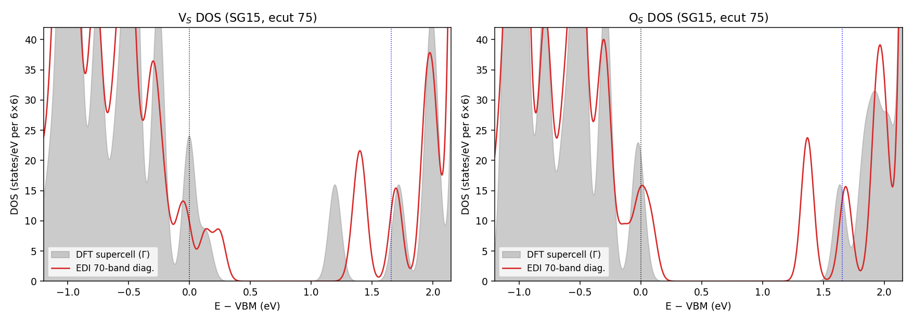
DOS (states/eV per $6\times6$ cell), SG15 / $E_{\rm cut}=75$ Ry: supercell DFT ($\Gamma$, gray) vs the EDI Hamiltonian $\mathrm{diag}(\varepsilon)+M$ diagonalized over 70 primitive bands (red), both aligned at the bulk VBM (black dotted; blue dotted = bulk CBM). V$_S$ (left): the occupied $a_1$ now sits at the DFT position; the empty $e$ doublet is $\sim$0.2 eV too high. O$_S$ (right): the old spurious mid-gap $+0.73$ doublet is gone — the gap is clean, the only in-gap feature is a conduction-edge state ($\sim$+1.37 vs DFT LUMO $\sim$+1.6).| in-gap level | old EDI (ecut 100) | SG15 EDI (ecut 75) | supercell DFT (SG15) |
|---|---|---|---|
| V$_S$ $a_1$ | $+0.33$ | $+0.130$ | $+0.136$ ✓ |
| V$_S$ $e$ | $+1.21$ | $+1.37$–$1.42$ | $\sim\!+1.2$ |
| O$_S$ deep | $+0.73$ | none (edges: $+0.089$, $+1.37$) | none |
So the dramatic $+0.73$ (and the V$_S$ $a_1$ over-binding) was largely a property of the old pseudopotential set (and/or the higher $E_{\rm cut}$), not an intrinsic finite-basis limitation: with clean SG15 pseudopotentials the EDI reproduces DFT to $\sim$5 meV for the V$_S$ $a_1$ and correctly gives no deep O$_S$ level. A small residual ($\sim$0.2 eV) remains in the empty conduction-edge states — the genuine, much smaller finite-basis effect. (The §4.4 unfolding/rotation analyses were run on the old-pseudopotential edmat; the mechanism they identify is real but its scale was set by those pseudopotentials. 66- vs 70-band diagonalization shifts the SG15 levels by $<5$ meV — band-converged.)
Full T-matrix path (SG15). Running the complete EDT production path on the SG15 edmat — re-Wannierize ($\to$ filukk_sg15, 11 WF from bands 7–17), deep-band downfold ($Q=\{1\text{–}6\}\cup\{18\text{–}70\}$, exact static $\Sigma$), Koster–Slater resummation on a $24\times24$ BZ grid — gives the defect-concentration ($n_d=2.78\%$) spectral DOS:
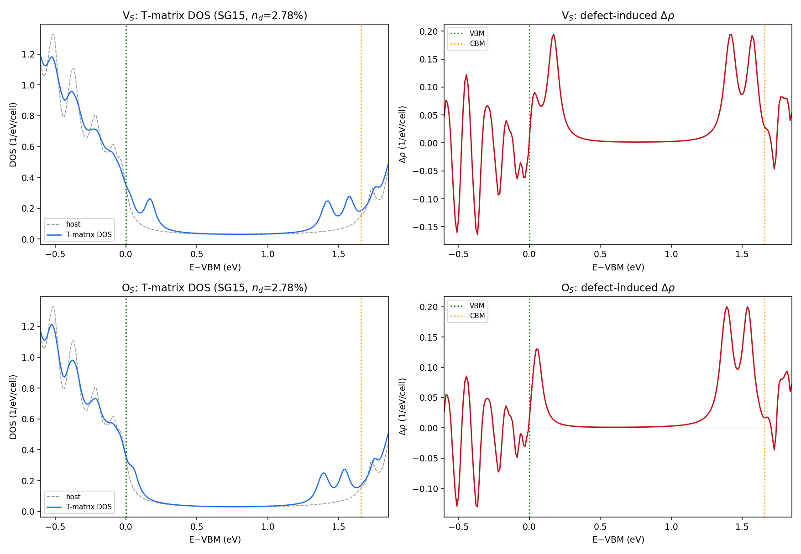
SG15 T-matrix DOS. Left ($\rho$): host (dashed) vs defect-dressed. Right: defect-induced $\Delta\rho$. V$_S$ (top): $\Delta\rho$ peaks at the $a_1$ ($\sim+0.17$) and the $e$/CBM-edge ($\sim+1.4$). O$_S$ (bottom): $\Delta\rho$ is flat across the mid-gap (0.3–1.2 eV) — no deep state — only band-edge redistribution. The resummed T-matrix DOS reproduces the direct-diagonalization / DFT picture: no spurious O$_S$ $+0.73$, V$_S$ $a_1$ near the VBM.Two SG15 simplifications vs the §4.1 gauge gymnastics: (i) the deep bands 1–6 live in the same edmat (band range 1–70) and gauge as the active block, so no separate bra-fixed matrix element is needed; (ii) the SG15 re-Wannierization passes its NSCF-interpolation check directly ($<10^{-4}$ eV), so no $\Sigma_{\rm deep}$ re-gauging is required — both because the edmat and filukk_sg15 derive from one self-consistent NSCF.
5. $T(nk,\omega)$ spectral map
The full energy dependence of the VBM-band diagonal $T(nk,\omega)$ along $\Gamma$–M–K–$\Gamma$ — Re (level shift) and Im ($-$Im $\propto$ scattering rate) as separate maps; dashed = on-shell $\varepsilon_{\rm VBM}(k)$.
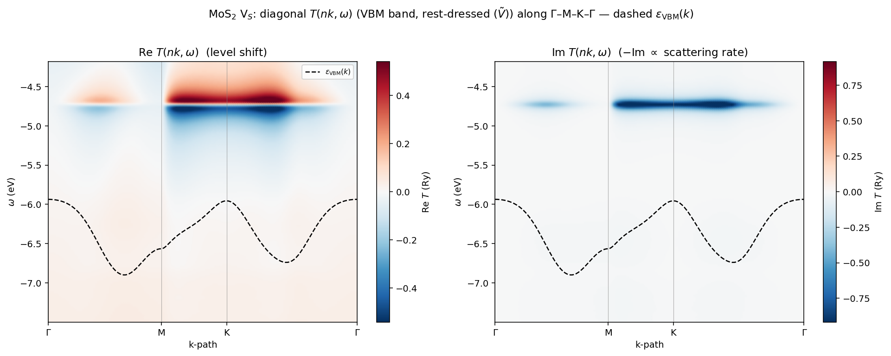
V$_S$: a dispersionless (flat-in-$k$) in-gap resonance at $\omega\approx-4.9$ eV — Re $T$ shows the level-shift sign flip across it, Im $T$ a bright scattering ridge. Flatness in $k$ is the signature of a localized defect state (and a direct check that the gauge-locked interpolation is clean).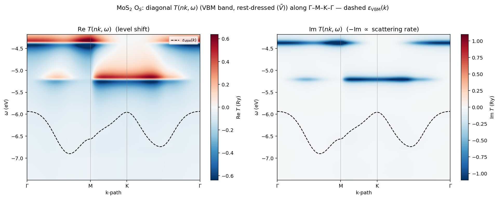
O$_S$: in-gap structure that is stronger near K and carries an additional branch toward the CBM, consistent with the larger O$_S$ $T$-matrix.6. Real-space locality & gauge validation
The Wannier interpolation and the $R_{\rm cut}$ truncation are only valid if the dressed potential $\tilde V^W(\mathbf R)$ is localized. With the gauge-locked filukk it is:
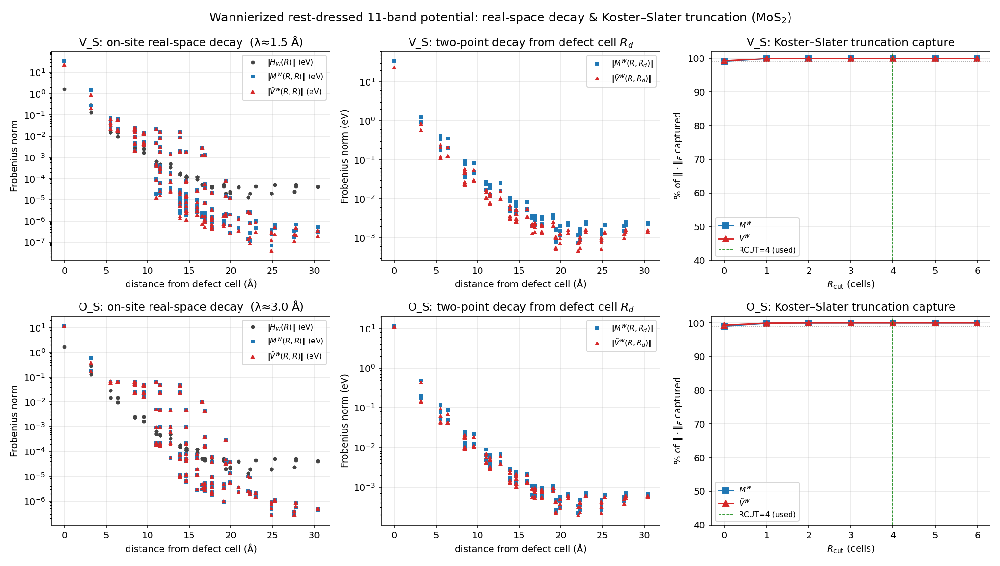
On-site $\|\tilde V^W(\mathbf R,\mathbf R)\|$ decays $\sim$370× (V$_S$) / 160× (O$_S$) over $\lesssim$5 Å (envelope $\lambda\approx1.5$/3.0 Å); the Koster–Slater truncation captures $\geq$99 % already at $R_{\rm cut}{=}0$ and 100 % by $R_{\rm cut}{=}2$ — so $R_{\rm cut}{=}4$ is amply converged.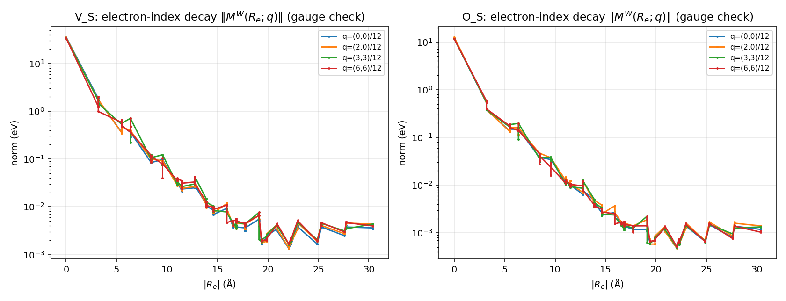
Gauge diagnostic: the electron-index decay $\|M^W(R_e;q)\|$ now falls for every $q$ (48–79× over $\sim$5 Å). A per-$\mathbf k$ gauge mismatch would leave $q\neq0$ flat (the failure mode of the initial stalefilukk, where $R_{\rm cut}{=}4$ captured only 55 %). All-$q$ decay confirms $U(\mathbf k)$ and $M$ share one smooth gauge.
7. Summary
| Quantity | V$_S$ (vacancy) | O$_S$ (substitution) |
|---|---|---|
| Downfolded in-gap level (vs Anvil) | $+1.21$ eV ✓ ($+1.205$) | $+0.73$ eV ✓ ($+0.731$) |
| vs supercell DFT (§4.4) | $e$ agrees; $a_1$ over-bound ($+0.33$ vs DFT $+0.116$) | spurious — DFT has no deep state |
| $\|T_{PP}\|$ at K (VBM) | $\approx0.004$ Ry | $\approx0.080$ Ry ($\sim$19×) |
| $\|T_{PP}\|$ max on path | $\approx0.035$ Ry | $\approx0.080$ Ry |
| VBM broadening $\|{\rm Im}\,n_d\Sigma\|$ max ($n_d=2.78\%$) | $\sim$9.5 meV | $\sim$13 meV |
| VBM level shift Re $n_d\Sigma$ | $-1$ to $+13$ meV | $-16$ to $-30$ meV |
| Rest-space dressing | non-trivial | mild |
| $\tilde V^W$ locality ($\lambda$; $R_{\rm cut}{=}4$ capture) | 1.5 Å; 100 % | 3.0 Å; 100 % |
Headline: at the valence-band edge (K) the isovalent O$_S$ scatters $\sim$19× harder than the V$_S$ vacancy and shifts the VBM down markedly more, while the rest-space dressing matters more for V$_S$ — the beyond-Born physics the explicit-summation $T$-matrix resolves. All quantities use the gauge-locked Wannier rotation (validated by the §6 real-space decay). Caveat (§4.4–4.5): with the old pseudopotentials the EDI in-gap levels over-bound (O$_S$ a spurious $+0.73$, V$_S$ $a_1=+0.33$ vs DFT). An SG15 recompute (§4.5) shows this was largely a pseudopotential artifact — the clean SG15 EDI matches DFT (V$_S$ $a_1$ to $\sim$5 meV; no deep O$_S$ level), leaving only a $\sim$0.2 eV residual in the empty states. The matrix element and band-edge scattering are unaffected throughout. Pipeline and matrix elements are in place to repeat this for WS₂ V$_S$/O$_S$.